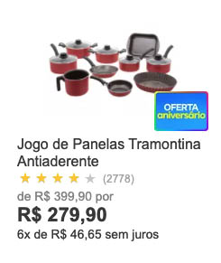
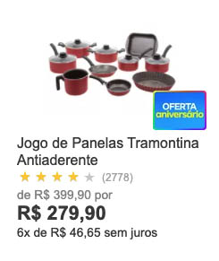

Novidades que selecionamos pra voçê


 


A fim de ajudá-lo a planejar sua estadia, eu preparei este guia das melhores coisas para fazer em Málaga e seus arredores. Além das atrações imperdíveis e pontos de interesse, também darei todas as minhas melhores dicas, bem como minha lista das melhores acomodações da cidade, dependendo do seu orçamento.